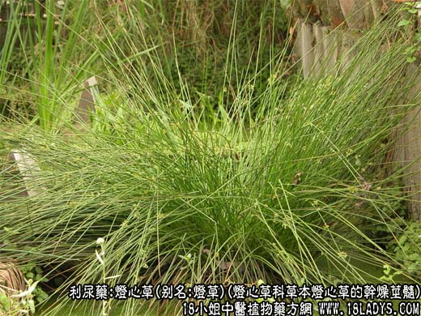
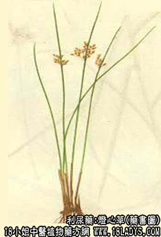

原文出处:本文转载自中药大全网。
原文连接:https://www.daquan.com/post/2151.html
原文连接:https://www.daquan.com/post/2151.html



灯心草为较常用中药，始载《开宝本草 》。
别名：灯草、灯心。
来源：为灯心草科多年生草本植物灯心草的干燥茎髓，野生于湿地及沼泽边缘，亦有栽培。
产地：主产于江苏苏州，吴县，四川宜宾，云南陆良，富民，此外浙江，福建，广东，贵州等省亦产。
采收加工：秋季采收全草，用刀纵向划开皮部，将髓与皮分离，取出髓后捆扎成把晒干。
性状鉴别：茎髓呈细长圆柱形，似粉条。一般长约50～60厘米，亦可达一米余。直径2～3毫米。表面白色或淡 黄白色，有细纵沟纹，体轻入水不沉，质极轻软，轻压略有弹性。易折断，断后白色，无空隙，气微，味淡。
以色白，条长，粗细均匀，有弹性者为佳。
主要成分：含阿拉伯聚糖和木聚糖。
功效与作用：清热利湿，有利尿作用。
炮制：切断生用或朱砂拌。
性味：淡、平。
归经：入心，小肠经。
功能：清心热，除烦利水。
主治：热性病（如发烧或心火）之口渴，小便不利及尿路感染之淋浊病，小便困难，尿时涩痛等症。
临床应用：主要用于清心火，但力量较单薄，只适宜病情浅者，或辅助其它清热利尿药用。小儿因心热而烦躁、夜啼，可用灯心一扎，水煎服（用朱砂拌制过的朱灯心更好）。成人因心肾不交心火过盛，肾阴不足而引起的兴奋型神经官能症而夜睡不宁或失眠，可用一味灯心（或配淡竹叶）煎汤临睡前服。
用量：1.5～3g，或小儿一扎，成人三扎。
处方举例：灯心竹叶汤：灯心草3扎，淡竹叶9g，水煎服。
注：1、四川所产之灯心草栽培者品质较好，剥去皮后当地称灯心。未除去外皮者称灯草。野生品质较次，茎细，不能剥取髓心。
2、贵州等地所产者，茎细，髓心小，不能剥取。
3、苏州所产灯心草，品质最好，其外皮为制作蓑衣的原料，而茎的髓心为副产品。